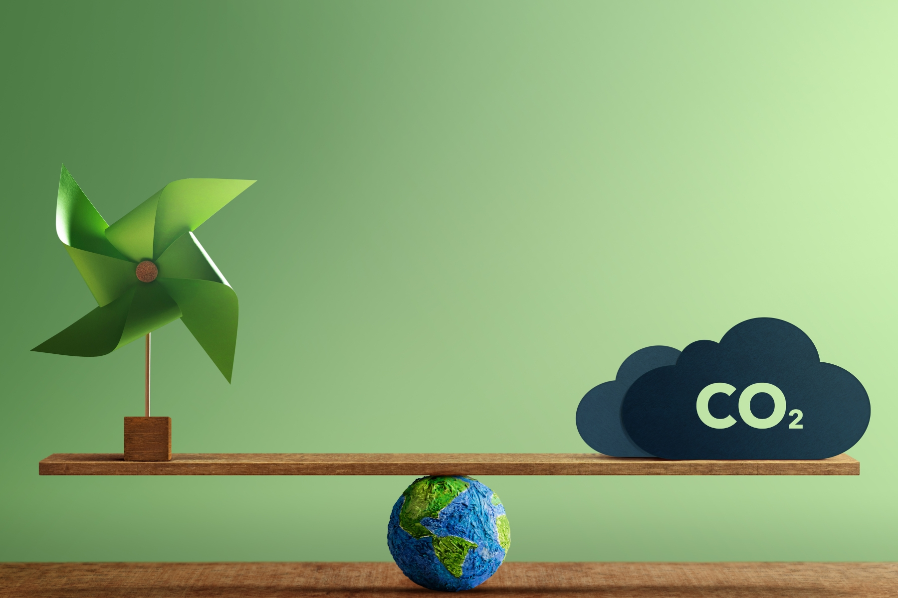

Curso de Economia Circular
O que é?
A economia circular é um modelo econômico que visa minimizar o
desperdício e otimizar o uso de recursos, em contraste com o modelo
linear tradicional de "extrair, fabricar, usar e descartar". Ela se
baseia em três princípios-chave: design regenerativo e circular,
cadeias de suprimento sustentáveis e reutilização/reciclagem eficientes.
O objetivo é criar uma economia onde materiais e produtos sejam reutilizados,
reparados, reciclados ou regenerados sempre que possível, gerando benefícios
ambientais e econômicos.
Por que é importante?
A economia circular é vital hoje devido à escassez de recursos, impacto ambiental, custos econômicos, inovação e competitividade, além da demanda dos consumidores. Ela propõe um modelo econômico que minimiza desperdícios, promove a reutilização, reciclagem e redução de resíduos, impulsionando a eficiência empresarial, a inovação e a sustentabilidade ambiental.
Quais as diferença?
Economia Linear: No modelo linear, os recursos são extraídos,
transformados em produtos, usados pelos consumidores e, em seguida,
descartados como resíduos após o término de sua vida útil. Esse
modelo é caracterizado pela produção em massa e pela mentalidade de
"usar e jogar fora", resultando em uma grande quantidade de resíduos
e na perda de recursos valiosos.
Economia Circular: Já na economia circular, os recursos são mantidos
em uso pelo maior tempo possível, através de práticas como reutilização,
reparo, reciclagem e regeneração. Os produtos são concebidos desde o início
com o objetivo de serem duráveis, reparáveis e recicláveis, e as cadeias de
suprimento são projetadas para minimizar o desperdício e a poluição. Esse
modelo visa fechar o ciclo de vida dos materiais, mantendo-os em circulação
na economia pelo maior tempo possível e reduzindo a dependência de recursos
finitos.

Escolas e Pensamentos
Ecologia Industrial
A ecologia industrial é um campo que aplica princípios da ecologia para projetar sistemas industriais mais sustentáveis. Ela se baseia na ideia de mimetismo de ecossistemas, onde resíduos de uma empresa se tornam recursos para outra, promovendo eficiência no uso de recursos. Isso é alcançado através da simbiose industrial, análise de ciclo de vida, busca por eficiência energética e colaboração entre diversas partes interessadas. O objetivo é transformar os sistemas industriais para que se assemelhem mais aos ecossistemas naturais, minimizando impactos ambientais e promovendo a sustentabilidade a longo prazo.
Design Regenerativo
O design regenerativo é uma abordagem de design que visa criar sistemas, produtos e processos capazes não apenas de minimizar impactos negativos no meio ambiente, mas também de regenerar e restaurar ecossistemas e comunidades afetadas. Inspirado na natureza, busca ciclos fechados, resiliência, benefícios multifuncionais e colaboração entre múltiplas partes interessadas. Essa abordagem vai além da mitigação de danos, buscando ativamente promover a sustentabilidade e a resiliência a longo prazo.
Cradle to Cradle (Berço ao Berço)
O Cradle to Cradle (C2C), ou "Berço ao Berço", é um conceito de design que busca criar produtos e sistemas onde todos os materiais utilizados sejam seguros e saudáveis para o meio ambiente, podendo ser continuamente reciclados e reaproveitados, sem gerar resíduos. Características-chave incluem ciclo fechado de materiais, segurança para a saúde humana e ambiental, eficiência energética e uma abordagem circular e regenerativa. O C2C promove a sustentabilidade e a resiliência ambiental, visando a criação de uma economia onde todos os materiais são considerados valiosos nutrientes.

Biomimética
A biomimética é uma abordagem de design e engenharia que se inspira na natureza para resolver problemas humanos e desenvolver inovações tecnológicas. Ela busca imitar formas, processos e sistemas encontrados na natureza para criar soluções eficientes, sustentáveis e adaptáveis. Essa disciplina valoriza a eficiência, a sustentabilidade, a resiliência e a inovação, utilizando a diversidade da vida na Terra como fonte de inspiração para projetos e tecnologias inovadoras.
Blue Economy
A Blue Economy, ou Economia Azul, é uma abordagem econômica que visa ao uso sustentável dos recursos marinhos e costeiros. Ela promove a diversificação econômica, a inovação tecnológica e a conservação dos ecossistemas marinhos, enquanto busca o envolvimento equitativo das comunidades costeiras. Essa abordagem equilibra as necessidades econômicas com a preservação dos recursos marinhos e o bem-estar das comunidades locais.
Economia Ecologica
A economia ecológica é uma área de estudo que combina princípios da ecologia e da economia para abordar os desafios da sustentabilidade ambiental e do desenvolvimento econômico. Ela reconhece os limites físicos e biológicos do planeta, valoriza os serviços ecossistêmicos, promove o decrescimento sustentável e busca equidade social e intergeracional. Essa abordagem multidisciplinar visa desenvolver uma economia que respeite os limites do meio ambiente e promova o bem-estar humano de forma equitativa e sustentável.
Economia de Baixo Carbono
A economia de baixo carbono é um modelo econômico que busca reduzir as emissões de gases de efeito estufa, especialmente o dióxido de carbono (CO2), enquanto promove o crescimento econômico sustentável. Isso é alcançado através da descarbonização da economia, inovação tecnológica, políticas públicas, investimentos sustentáveis e benefícios econômicos e sociais. Essa abordagem visa a transição para sistemas de produção e consumo mais limpos, eficientes e resilientes, reduzindo a dependência de combustíveis fósseis e promovendo uma economia mais sustentável e equitativa.

Economia Verde
A economia verde é um modelo econômico que busca promover o desenvolvimento sustentável, conciliando o crescimento econômico com a preservação ambiental e a inclusão social. Ela se baseia na eficiência no uso de recursos, na adoção de energia renovável e de baixa emissão de carbono, na conservação da biodiversidade, na inclusão social, na inovação e no empreendedorismo sustentável. Essa abordagem reconhece a interdependência entre economia, meio ambiente e sociedade, visando a criar um futuro mais próspero, justo e ambientalmente saudável.
Designe Sustentavel
O design desempenha um papel essencial na economia circular, pois pode influenciar diretamente a forma como os produtos são concebidos, fabricados, usados e descartados. Ao criar produtos duráveis, reparáveis, recicláveis e modulares, o design pode prolongar a vida útil dos produtos e facilitar sua reciclagem no final de seu ciclo de vida. Além disso, o design pode promover modelos de negócios baseados em serviços e compartilhamento, incentivando o uso mais eficiente dos recursos. Em resumo, o design é uma ferramenta poderosa para impulsionar a transição para uma economia circular, promovendo a sustentabilidade e a eficiência no uso de recursos.
Tecnologia na economia circular
A tecnologia desempenha um papel essencial na economia circular, fornecendo soluções inovadoras para otimizar o uso de recursos, reduzir desperdícios e facilitar a reciclagem e a reutilização de materiais. Isso inclui tecnologias de rastreamento e identificação de materiais, Internet das Coisas (IoT) para monitoramento em tempo real, modelagem e simulação computacional para otimização de processos, tecnologias de fabricação avançada como impressão 3D, blockchain para garantir a rastreabilidade de materiais reciclados e inteligência artificial para análise de dados e previsão de demanda. Em resumo, a tecnologia desempenha um papel crucial na transição para uma economia circular, promovendo a sustentabilidade e a eficiência no uso de recursos.
Conclusão
A economia circular é uma abordagem essencial para promover a sustentabilidade, reduzindo o desperdício de recursos e as emissões de carbono. O design e a tecnologia desempenham papéis fundamentais nessa transição, facilitando a criação de produtos duráveis, recicláveis e modulares, e oferecendo soluções inovadoras para otimizar o uso de recursos. No entanto, é necessário um esforço conjunto de governos, empresas e indivíduos para impulsionar essa mudança, através de políticas públicas, incentivos econômicos e uma mudança cultural em direção ao consumo consciente. A economia circular representa uma oportunidade única para promover a prosperidade econômica, a equidade social e a saúde ambiental em todo o mundo.